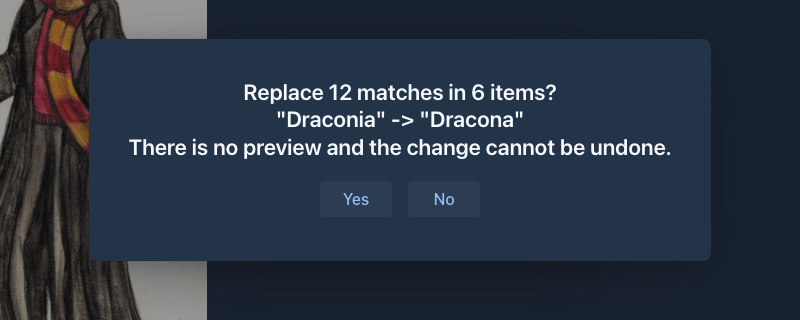

Writing commands
This page shows how to add commands, in the application and in a plugin. Read Commands first for the model.
A suite
A suite is a plain class (no interface, no base class) with public methods annotated with @Command:
public class DiceCommands {
@Command(commandName = "roll", humanNameText = "Roll a die",
descriptionText = "Rolls a die with the given number of sides (6 when omitted).",
llmDescriptionText = "Returns a random integer from 1 to the number of sides. No side effects.",
dataSeverity = CommandDataSeverity.NON_DESTRUCTIVE,
signature = @CommandParameterSignature(
@CommandParameter(name = "sides", type = Integer.class, descriptionText = "Number of sides")),
returns = @CommandReturn(name = "result", type = Integer.class, descriptionText = "The number rolled"))
public void roll(CommandContext context) {
int sides = context.get("sides", Integer.class);
context.setReturn(ThreadLocalRandom.current().nextInt(sides) + 1);
}
@Command(commandName = "roll", humanNameText = "Roll a die",
descriptionText = "Rolls a die with the given number of sides (6 when omitted).",
llmDescriptionText = "Returns a random integer from 1 to the number of sides. No side effects.",
dataSeverity = CommandDataSeverity.NON_DESTRUCTIVE,
signature = @CommandParameterSignature,
returns = @CommandReturn(name = "result", type = Integer.class, descriptionText = "The number rolled"))
public void rollSix(CommandContext context) {
context.setReturn(ThreadLocalRandom.current().nextInt(6) + 1);
}
}/roll and /roll 20 now work. The two methods are two forms of the command roll: the same name and human name, a
different signature. Typing /roll 20 is text; because the parameter is Integer.class the text is converted, and
/roll many fails with a notification instead of calling the method.
Rules to remember:
-
The method is
public voidand takes only theCommandContext. Anything else makesregisterCommandsthrow. -
Fill in
description(for the user, shown in the list and the help) andllmDescription(for an agent: what it does, when to use it, whether it has side effects). SeeTexts for how they are given. -
Declare
returns. The help shows it.void.classis the default. -
Declare
dataSeverity, seeData severity . The default isDESTRUCTIVE; a command that does not change or remove anything that exists saysNON_DESTRUCTIVE. -
No signature means any arguments: the objects are in
context.getPositional(). Use it for commands like echo, or when the arguments are truly free-form. A declared signature that fits always wins over the any-form. -
An argument of type
Object.classis "any" and also accepts a list of objects, passed as one argument. -
A parameter can say more for an agent (it is the schema of the function, see Commands as functions):
optional = true(it may be left out),defaultValue = "0"(text, converted to the type),allowed = {"short", "long"}(an enum type needs none, its constants are the values) and, for a number,min = "1"andmax = "200"(text too; they are theminimumandmaximumof the schema, and a value outside them is refused with a message that names the limit - say them when the command would clamp or fail on such a value). Give a parameter adefaultValuewhen the command reads it as a primitive or would fail onnull: the form an agent calls is the shortest one that has all the arguments it passed, so a parameter it left out of a longer form isnullunless it has a default. Withoutoptionala parameter is required when every form of the command has it, so with a ladder of forms that each add a parameter only the first ones are required. The command line ignores all of them. -
A parameter of the type
LLMAttachment[]takes images for the model the command talks to (the Lore Generator'sgenerate-lore-entryhas one,images). An agent passes paths of image files of its workspace and the command gets the attachments (see Images); the command line can't convert text to attachments, so keep such a parameter in a form of its own at the end of the ladder,optional = true. -
The suite is stateless. Do not keep the book, the user or the result in a field. See Statelessness.
Texts
Every text a command shows is given in two ways, as a pair of attributes:
The localized one takes an L key and is resolved in the language of the user every time it is shown (CommandText.get(loc)),
so the application's own commands use it (humanName = L.LABEL_COMMAND_TAKE_BACKUP; the key goes to L and to the English,
Japanese and Chinese bundles as usual). The plain one is for an extension that brings no translations and is shown as it is.
The identifiers (commandName, a parameter's name, the return name) are not texts and stay strings.
The attributes are arrays only so that "not given" can be told from "given" (the default is the empty array); write the value
alone: humanName = L.LABEL_X, humanNameText = "X". The human name needs one of the two; the other texts are optional. A pair may hold only one value: both
attributes of a pair, more than one element, or none for the human name make registerCommands throw IllegalArgumentException that names the
method and the attribute. The registry keeps each as a CommandText (key() or text(), isEmpty(), get(...)); an
annotation attribute needs an enum constant, so use L.X directly there, not a constant that holds it.
Data severity
dataSeverity tells the user, and later an agent, whether the command changes or removes data that exists:
CommandDataSeverity.DESTRUCTIVE (the default, also for a command that says nothing) or NON_DESTRUCTIVE.
-
Use
NON_DESTRUCTIVEfor commands that read, compute or only add (a backup, a new entry). Nothing that was there before changes. -
Leave
DESTRUCTIVEfor everything that replaces, deletes, overwrites or moves existing data (search and replace, delete, restore, import over a book). When in doubt it is destructive: the safe assumption costs only a red label. -
All forms of one command share the value;
registerCommandsthrows when they differ. -
It is information. The service does not ask or refuse because of it, so a destructive command that has no preview still asks itself, see
Asking the user .
Read only commands
@Command(readOnly = true) declares that the command changes nothing (no book, lorebook, or data of an extension); the default is false, so a command that does not say is taken to change data. The runner of an agent takes an
automatic checkpoint before a round in which a call may change something, and a round of read only commands needs none. All forms of one command share the value (registerCommands throws when they differ),
CommandDefinition.readOnly() returns it. All the read commands of the app and the get- / list- commands of the Arc Outline and the Character Tracker declare it.
Batch policy
@Command(batch = BatchPolicy.SINGLE) says that an agent should call the command alone in its answer: the calls after it
are not made, and one that comes after other calls waits for an answer of its own. Use it for a command that is long or costly
(one that makes a call to a model: next, swipe, the generators of extensions) or whose result the agent should read before it
goes on. The default is BatchPolicy.BATCHABLE. It is advice about use, not a claim about what the command does (that is
readOnly); the runner follows it unless the agent is set to All together, ignore the batch policies. Declare it the same on all
forms of a command (unlike readOnly, registerCommands does not compare it), and @LLMFunction(batch = ...) does the same for the tools of the application itself. The user sees it as the Batch
column (Together / Alone) in the commands of an agent.
Available for agents
@Command(availableForAgent = false) keeps a command from agents (the default is true). Use it for a command that only
makes sense for the user at the book window, such as /take-backup, which backs up the book the user has open: an agent works on
a copy, and its backups are the checkpoints. A command that is not available is not in the allowlist editor of the agent dialog,
is never turned into a function for the model (CommandFunctions, even when the allowlist of an older agent names it) and is not
offered in the command box of the console; the user still runs it from the command bar. All forms of one command share the value
(registerCommands throws when they differ), CommandDefinition.availableForAgent() returns it. It is independent of the
severity, and such a command needs no llmDescription.
The label is shown by the command bar in the list and in the help, with an explanation as its tooltip; the texts are the keys
LABEL_COMMAND_DESTRUCTIVE, LABEL_COMMAND_NON_DESTRUCTIVE, HELP_COMMAND_DESTRUCTIVE and HELP_COMMAND_NON_DESTRUCTIVE,
carried by CommandDataSeverity.getLabel()/getDescription().
Reading the current state
@Command(commandName = "book-title", humanNameText = "Title of the open book", returns = @CommandReturn(name = "title", type = String.class))
public void title(CommandContext context) {
Manuscript book = context.getScope().getManuscript();
if (book == null) {
context.fail(new IllegalStateException("No book is open"));
return;
}
context.setReturn(book.getName());
}getScope().getManuscript() returns null when nothing is open (no workspace yet, no book). The same code works in the desktop and in
the phone layout and for an agent, whose scope is its working copy (see The scope); a command that must work for
agents takes the book from the scope and does not go through the workspace or the open window itself. An item that is given to the command
(a part, a lorebook, an entry) is found with getScope().resolveMessage(uuid) and its siblings, which keep the command inside the book.
Use the services for data; they check ownership of the current user.
Failing
A synchronous command can throw; the caller gets a CommandException with the exception as its cause. fail does the same
and is the way for code on another thread. A message intended for the user goes into the exception message – the command
bar shows it in a notification.
Asynchronous commands
Set async = true when the command takes time or waits for something. Such a command:
- runs on a worker thread, never blocks the UI,
- may answer later, from any thread, with
setReturn(orfail), - must check
context.isTerminated()in its loops and return at once when it is true, because the user can press Stop in the progress window.
@Command(commandName = "slow", humanNameText = "Slow job", async = true)
public void slow(CommandContext context) {
for (int i = 0; i < 100; i++) {
if (context.isTerminated() || Thread.currentThread().isInterrupted()) {
return;
}
doOneStep(i);
}
context.setReturn("done");
}A part of the work that can't be abandoned (a transaction that is being written) is marked with
context.setUninterruptable(true); the Stop button is disabled and cancelling does nothing until you set it back to
false. See Uninterruptable runs.
Tell the user what is going on with context.setStatus("Taking a backup of Dune") (the main line) and
context.setSubStatus("Chapter 3 of 12") (the detail under it); they appear in the progress window. Set them as the work
advances, null clears a line.
Blocking calls (Thread.sleep, a network call) are interrupted when the run is cancelled; let the InterruptedException
end the command or set the interrupt flag again and return. A command that is stopped should not call setReturn; if it
does, the call is ignored.
Registering
The application
Add the suite in CommandServiceImpl.afterPropertiesSet:
registerCommands(new BackupCommands());The application's suites are plain objects, not Spring beans, and are created with new; one that needs services is
@Configurable and gets them @Autowired, like the UI classes (BackupCommands). Keep the logic in services and
make the command a thin adapter that reads the current state through CommandUtils.
A plugin
The plugin gets the CommandService injected into its (@Configurable) extension and registers the suite in
onExtensionLoad:
@Configurable
public class DiceExtension implements MarginaliaExtension {
@Autowired
private CommandService commandService;
private final DiceCommands commands = new DiceCommands();
@Override
public void onExtensionLoad(Bundle bundle, OsgiService parentService, ExtensionService extensionService) {
commandService.registerCommands(commands);
}
@Override
public void onExtensionUnload(Bundle bundle, OsgiService osgiService, ExtensionService extensionService) {
commandService.unregisterCommands(commands);
}
}Keep the suite instance in a field: unregisterCommands takes the registered object. Unregistering in
onExtensionUnload is required – the service does not track bundles, and a command left behind would keep the class
loader of the unloaded bundle alive. registerCommands throws when a name is taken, so give plugin commands a prefix
(dice-roll) unless the name is meant to be shared.
Running a command from code
CommandRun result = commandService.executeLine("/roll 20"); // a CompletableFuture<Object>; also getStatus()
Object value = result.get(); // blocks; fine for a synchronous command
commandService.execute("roll", Map.of("sides", 20)); // by name
commandService.executePositional("roll", List.of(20));Add true as the last argument (executeLine("/x", true)) to start the run uninterruptable; a command that is
uninterruptable and calls another asynchronous one passes context.isUninterruptable().
Do not block the UI thread on an async command: use whenComplete and ui.access(...). To stop it, cancel the future.
Testing
Commands are plain classes, so they are tested without the application: create a CommandServiceImpl, register the
suite and run it (see CommandServiceTest and CommandDispatchTest in src/test/.../command).
CommandServiceImpl commands = new CommandServiceImpl();
commands.registerCommands(new DiceCommands());
assertThat(commands.executeLine("/roll 1").get()).isEqualTo(1);
commands.destroy(); // stops the worker poolTest the dispatch (every form), the failure of a bad argument, and for an async command that cancelling the future ends
the work: assert isTerminated() becomes true and the worker returns. CommandUtils returns null outside a session, so
a test of a command that reads the workspace needs the request attributes (see CommandUtilsTest).
Asking the user
A command that changes data without a preview asks first. context.confirm(question) asks whoever called the command: the user gets a
yes/no dialog in the UI of the book window, on top of the progress window (so over its Stop button), the command waits on the worker thread
and gets false for no, when the run is stopped meanwhile or when there is no window; an agent is not asked again and gets yes (the
destructive mode of the agent decided when it called the command). Declare the command uninterruptable
only after the answer. /search-replace-parts and /search-replace-lore-entries (SearchReplaceChatMessageCommand,
SearchReplaceLoreEntryCommand) are the examples; their confirm method is a hook that tests override.

Checklist
- Each form has
description,llmDescription(asLkeys when the texts are translated),signature,returns. - Each command declares
dataSeverity(NON_DESTRUCTIVEonly when nothing that exists is changed or removed). - The suite has no state of a run or a user in fields.
-
asynccommands look atisTerminated(). - A plugin unregisters its suites in
onExtensionUnload. - The user guide or the plugin's documentation lists the command and its arguments.
-
CHANGELOG.MDmentions new commands.